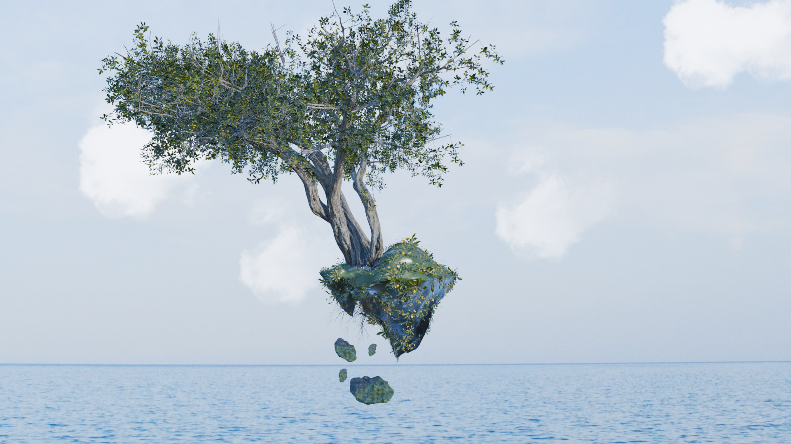
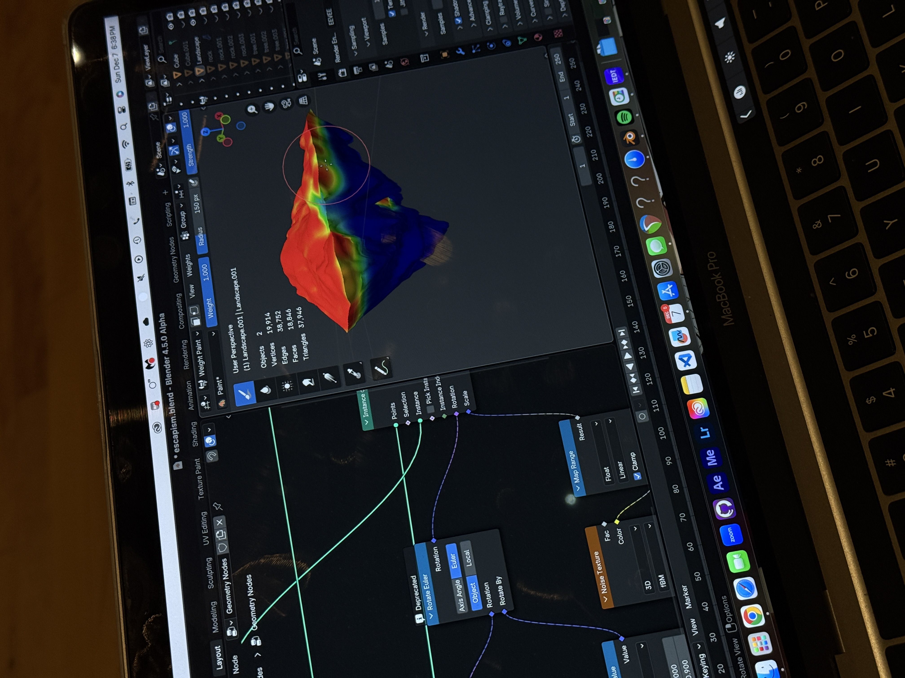
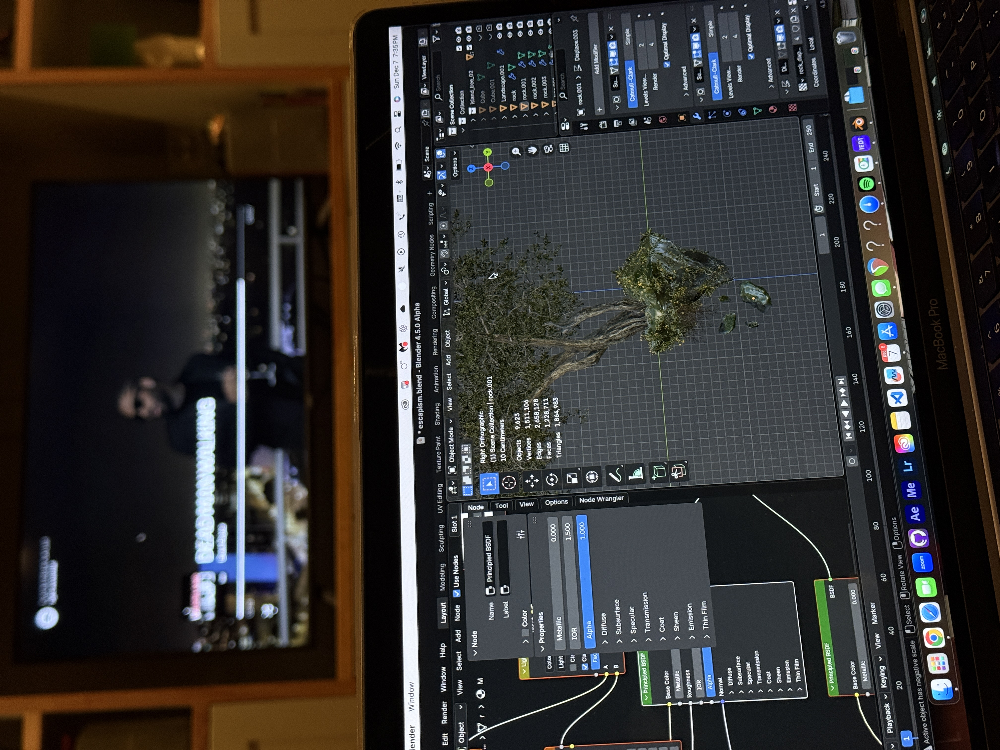

Ouroboros —
Looping 3D Animation
A seamlessly looping Blender animation of a willow tree resting on a floating rock — exploring the concept of circular time, stillness within motion, and the meditative quality of cycles that never truly begin or end.
Time flowing in circles.
The Ouroboros — the ancient symbol of a snake consuming its own tail — became the conceptual anchor for a 3D animation about cycles: peace, return, and the beauty of things that have no end.
The Idea
Stillness within motion.
A willow tree resting on a floating rock, suspended in space. The scene loops endlessly — branches swaying, light shifting — evoking a sense of peace and reflection, as if time itself is breathing in circles. Inspired by Zen gardens, the kintsugi philosophy of imperfect beauty, and the ancient concept of circular time.
The project asked a simple question: can motion feel still? Can a 3D animation communicate the experience of sitting quietly beside something ancient and patient, watching it breathe?
The Ouroboros metaphor: the loop isn't just technical — it's the conceptual point. The animation has no beginning and no end because the scene itself embodies circular time.
Floating island: the rock detached from any ground, suspended in an ambiguous space — reinforcing the dreamlike, timeless quality of the scene.
Willow as symbol: the willow was chosen deliberately — its long, cascading branches evoke both movement and stillness, bending without breaking, rooted without rigidity.


Building a scene that breathes.
Every element — the floating island, the willow canopy, the soft ambient light — had to work together to produce a loop that felt organic rather than mechanical.
Sketching & Reference Collection
Sketched multiple compositions of the floating island — exploring scale relationships between the rock mass and the willow canopy — before settling on a balanced, centered arrangement that felt grounded despite being airborne.
Island & Rock Modeling
Sculpted the floating rock using Blender's sculpt tools — rough, organic surfaces with soft underside edges to suggest something that has drifted and worn over time. Grass and moss were added using particle systems distributed across the top face.
Willow Tree Construction
Built the willow using Blender's Sapling Tree Gen add-on as a structural base, then extended and manually adjusted branches to achieve the characteristic weeping silhouette. Long strand particles were used for the hanging foliage curtain.
Animation — The Seamless Loop
The core technical challenge: making the loop invisible. Branch sway was achieved with wind force fields animated to return to their exact starting state at frame 1 = final frame. Particle simulations were baked and synchronized to the same cycle length to avoid any visual discontinuity.
Lighting & Atmosphere
Used a soft HDRI sky environment combined with a low-angle sun lamp to create the impression of golden hour light — warm, diffused, and slightly hazy. A subtle fog volume beneath the island reinforced the floating, untethered feeling.
Rendering & Output
Rendered in Cycles with denoising for clean, soft results. The final output was assembled in Blender's Video Sequence Editor and exported as a looping animation file.
Key Techniques Used


What the project achieved.
A truly seamless loop — the animation plays continuously with no visible cut, snap, or discontinuity, achieving the Ouroboros concept at a technical level.
Complete 3D scene built from scratch: sculpted floating island, procedurally generated willow tree, particle grass and moss, atmospheric fog volume, and HDRI lighting.
The willow's branch motion reads as organic and alive — not mechanical. The wind cycle is slow enough to feel meditative, rapid enough to maintain visual interest throughout the loop.
Concept and execution are tightly unified — the idea of circular time isn't just described, it's literally embedded in the structure of the animation itself.
What this project taught me.
Loops are a design constraint, not a limitation
Designing for a seamless loop forced every animation decision to serve the cycle — nothing could be added casually. That constraint produced more intentional, unified motion than an open-ended animation would have.
Simulation sync is the hardest part of looping
Getting particle systems and force fields to return to their exact starting state — with no visible snap at the loop point — required baking simulations precisely to the cycle length. It taught me that seamless loops are primarily a problem of data management, not artistry.
Concept should drive every technical choice
The Ouroboros idea — circular time, no beginning or end — wasn't just a title. It shaped the scene composition (floating, untethered), the lighting (golden, timeless), and the animation speed (slow, meditative). Starting with a clear concept made every subsequent decision easier.